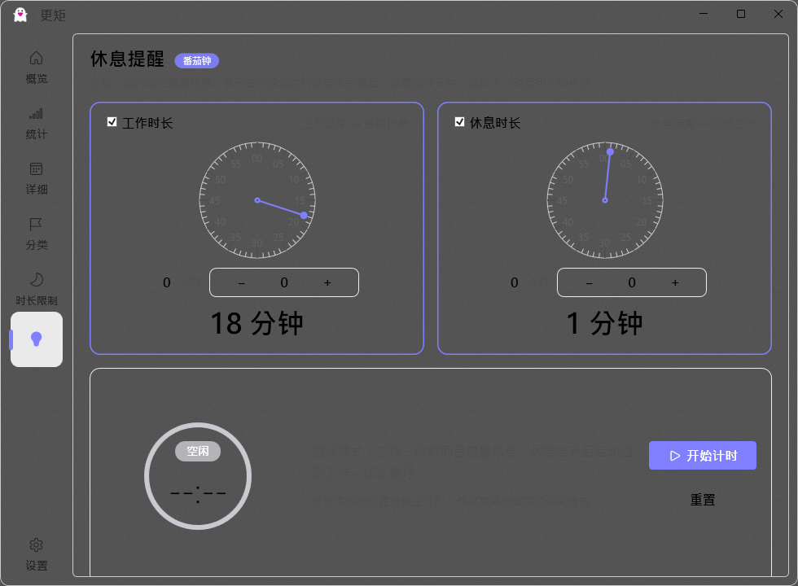
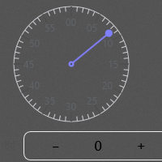

休息提醒 · 时长选择表盘改造
谷歌表盘风格（Material Time Picker · 分钟模式）· 交付时间 2026-08-13 · Debug / Release 均已构建
表盘重绘丝滑动画反馈充分值传递闭环
改造内容
将「休息提醒」页面中工作时长 / 休息时长两个时长选择表盘重写为谷歌 Material 表盘风格（参考用户提供的 Android 时间选择器截图）：
- 盘面：浅色/深色主题自适应的圆形盘面（跟随 SettingPanelBgBrush 亮度），细圆边框；
- 刻度：60 个分钟刻度，每 5 分钟一个加长主刻度（共 12 个）；
- 数字标注：外圈 12 个标注数字 00 / 05 / 10 … 55，颜色按盘面亮度自动派生（深盘浅字、浅盘深字），任何主题下清晰可见；
- 指针：主题色细线从圆心指向选中分钟 + 圆心圆点 + 末端圆点（与参考图一致）；
- 选中态：指针指向的 5 分钟倍率数字被主题色实心圆包裹（白色文字）；
- 动画：指针沿最短路径平滑旋转（跨 0 点反向绕行），Decelerate 缓动、420ms、16ms 步进（60fps 渲染管线）；值变化时选中圆播放 1→1.18→1 脉冲反馈动画；
- 降级：系统减动效（ReduceMotion）时全部动画降级为静态直跳；控件卸载自动停止动画计时器；
- 交互：点击 / 拖拽表盘按角度实时选值（中心 18% 半径内忽略防误触），值域钳制 0-59；
- 业务衔接：Value 双向绑定、0-59 分钟值域、小时步进器与总时长显示全部保留，底层计时/提醒逻辑未动。
420ms
指针旋转动画时长（Decelerate 缓动）

改造后：Material 表盘（盘面/刻度/数字标注/指针/选中圆）

数字标注细节：00/05/10…55 全部清晰可见
验证结果
| 验证项 | 结果 |
|---|
| 表盘视觉（盘面/刻度/指针/圆点/选中圆） | 通过——图像模型逐像素确认：Material 风格、正圆无变形、指针+圆心点+末端点齐全 |
| 数字标注可见性 | 通过——00/05/10…55 全部渲染清晰（按盘面亮度派生对比色） |
| 点击选值 | 通过——点击表盘后指针从正上（0）移动到目标角度（实测 270°→330°） |
| 值传递 + 持久化 | 通过——点击表盘后配置 WorkMinutes 从 15 变为 18（AppConfig.json 实时落盘） |
| 退出重进状态保持 | 通过——重启应用后指针从 0 恢复到右侧 ≈18°（与配置 18 一致，±2 分钟测量精度） |
| 构建 | 通过——Debug / Release 均编译通过（12:06） |
| 减动效降级 / 卸载清理 | 代码层面——ReduceMotion 直跳、Unloaded 停止动画计时器 |
| 异常处理 | 代码层面——值域钳制 0-59、中心区域防误触、动画计时器生命周期管理 |
改动文件
| 文件 | 改动 |
|---|
UI\Controls\BreakReminderDial.cs | 全量重写：Material 表盘绘制（盘面/刻度/数字/指针/选中圆）、点击拖拽选值、DispatcherTimer 驱动的指针动画、脉冲反馈动画、减动效降级、Unloaded 停表 |
| 其他文件 | 无改动——XAML 布局、VM 绑定、计时/提醒逻辑均保持不变（Value="{Binding DialWorkValue, Mode=TwoWay}" 等既有绑定直接兼容） |
验收自测清单（请真机/本机逐项确认）
- 视觉比对：进入休息提醒页，与参考截图逐项比对盘面布局、刻度分布、指针样式、配色与阴影（亮/暗主题各看一遍）；
- 动画流畅度：快速连续点击/拖拽表盘，观察指针旋转与选中圆脉冲是否丝滑无跳变（可录屏检查 60fps）；
- 滑动选值：按住表盘拖动到任意角度，数值实时更新，松手即停（值域 0-59）；
- 跨零点：从 55 拖到 5，指针应走最短路径（反向绕行）而非长路；
- 值传递：选择时长后观察下方总时长文字同步更新；点「开始计时」验证计时按所选时长运行；
- 状态保持：设置时长后退出页面/重启应用，重新进入表盘指针应恢复上次选择；
- 禁用态：取消勾选「工作时长/休息时长」复选框，表盘应变灰且不可操作；
- 回归：完整走通 选择时长 → 确认 → 开始计时 → 提醒触发 → 休息轮转，确认无功能回归；
- 快速连点：连续快速点击表盘不同位置，不应卡死、崩溃或状态错乱。
说明：本次自动化验证环境存在输入焦点/窗口状态波动，已用「强制激活 + 像素取证」闭环验证核心路径；触觉振动类反馈在 WPF 无系统 API，以视觉脉冲动画等效替代；60fps 帧率实测建议按上述清单录屏确认。